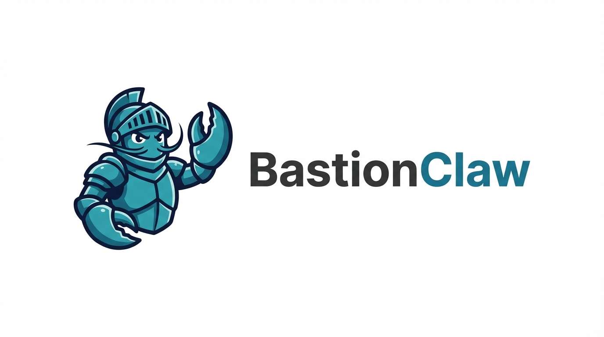
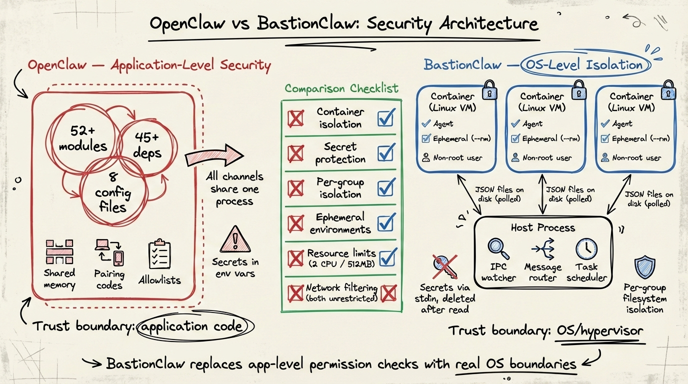
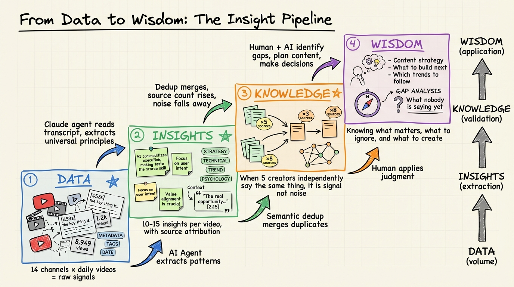
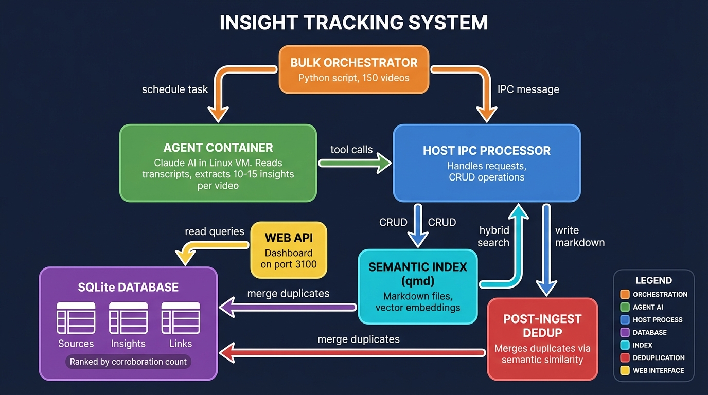

OpenClaw (formerly ClawBot) is a popular open-source AI assistant framework. Over time it grew into a complex system that became increasingly difficult to understand, secure, and maintain.
This means a bug in any module can potentially access data from any channel or group. The trust boundary is the application code itself — and with 52+ modules, that boundary is very wide.
NanoClaw was built as a lightweight, secure alternative to OpenClaw. The philosophy is simple: deliver the same core functionality in a codebase you can read and understand in minutes, with real OS-level security instead of application-level permission checks.
All credit for the core architecture, container isolation model, skills system, and agent swarm support goes to the upstream NanoClaw project by @gavrielc. NanoClaw is an exceptional piece of engineering — a system that proves you don't need complexity to build something powerful and secure.
I needed a personal Claude assistant tailored for cybersecurity work. NanoClaw's container isolation model and small codebase made it the ideal foundation. This fork adds:
The upstream project's philosophy of "skills over features" means these customizations stay clean and maintainable. BastionClaw doesn't fight NanoClaw's architecture — it builds on it.
The diagram below compares the two security models side by side. On the left, OpenClaw's application-level approach; on the right, BastionClaw's OS-level container isolation.

| Security Property | OpenClaw | BastionClaw |
|---|---|---|
| Container isolation | None — shared process | Each agent runs in a Linux VM |
| Secret protection | Environment variables (shared) | Passed via stdin, deleted after read |
| Per-group isolation | Application-level checks | Separate filesystem mounts per group |
| Ephemeral environments | Persistent shared state | Containers are ephemeral (--rm) |
| Resource limits | Unrestricted | 2 CPU / 512MB per container |
| Network filtering | Unrestricted | Unrestricted (both) |
| Trust boundary | Application code | OS / hypervisor |
BastionClaw is a fork of NanoClaw, adding features tailored for cybersecurity workflows and daily productivity.
BastionClaw uses the official Telegram Bot API (via Grammy) as its default channel. The official API is more reliable than WhatsApp's unofficial library and better suited for automated workflows. WhatsApp is still available as an optional add-on.
A built-in Fastify + Lit web UI runs on port 3100, providing browser-based access to:
Long-term memory powered by qmd with hybrid search (BM25 + vector + LLM reranking). Conversations are progressively indexed mid-session and archived at compaction. The agent naturally recalls past discussions. Runs fully local with GGUF models — no cloud APIs needed.
A content intelligence system that ingests articles, YouTube videos, PDFs, and podcasts, extracting generalizable insights. Semantic deduplication merges insights across sources — when multiple independent creators express the same idea, the corroboration count rises, surfacing the most widely-observed principles.


Spin up teams of specialized agents that collaborate on complex tasks. Each subagent gets its own bot identity in Telegram groups, enabling visible multi-agent workflows.
Custom skills and configurations tailored for penetration testing, threat analysis, and security automation workflows. The container isolation model makes this particularly safe — agents with bash access are sandboxed at the OS level.
BastionClaw runs as a single Node.js process that orchestrates everything:
Channels (Telegram/WhatsApp) ──→ SQLite ──→ Polling loop ──→ Container (Claude Agent SDK) ──→ Response WebUI (localhost:3100) ──→ REST API / WebSocket ──────^
| Component | Purpose |
|---|---|
| src/index.ts | Orchestrator: state, message loop, agent invocation |
| src/channels/telegram.ts | Telegram bot connection via Grammy |
| src/container-runner.ts | Spawns streaming agent containers |
| src/group-queue.ts | Per-group queue with global concurrency limit |
| src/task-scheduler.ts | Scheduled task execution |
| src/db.ts | SQLite operations (messages, groups, sessions, state) |
| src/webui/server.ts | Fastify server, API routes, WebSocket handler |
| groups/*/CLAUDE.md | Per-group isolated memory |
claude, then /setup. Claude Code handles dependencies, bot creation, container setup, and service configuration automatically.
Want to learn more?
Visit www.allenharper.com